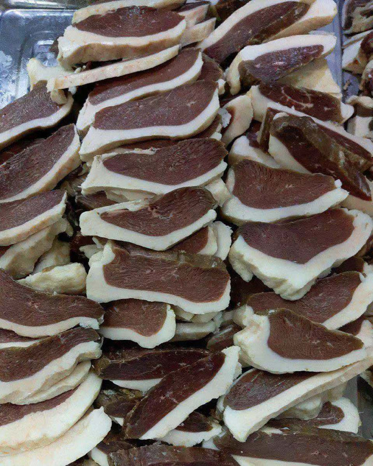

回族饮食文化
Food of Hui Nationality
永平作為博南古道的必經之地，飲食文化底蘊豐富，永平曲硐，是大理州回族人口最密集的回族自然村。回族人士的飲食習慣、文化習俗等均與伊斯蘭文化有關，以豬肉以外的動物肉為主要肉食。曲硐回族喜食鹅肉，擅於養鵝，久而久之便形成了以「臘鵝」為代表的永平回族飲食特色。
Yongping, as a necessary place for the ancient road of Bonan, has rich food culture. Yongping Qudong is the most densely populated natural village of Hui people in Dali. The dietary habits and cultural customs of Hui people are related to Islamic culture. Animal meat other than pork is the main meat. Qudong Hui people like goose meat and are good at keeping goose. Over time, they have formed the dietary characteristics of Yongping Hui people represented by "wax goose".
臘鵝是最具回族民族特色的美食之一，至今已有700多年歷史。回族人民素有飼鵝的習慣，將鵝養到10公斤左右便可用來製作臘鵝，皮色金黃、肉質鮮嫩，其脂肪還可以用來做鵝油，富含不飽和脂肪酸。除鵝肉和鵝油外，鵝肝也是永平的特色美食之一，肥而不膩，入口即化，是聚會宴席上一道必不可少的美味佳餚。
Lagoose is one of the most distinctive dishes of Hui nationality. It has a history of more than 700 years. The Hui people have the habit of feeding geese. If the geese are raised to about 10 kilograms, they can be used to make wax geese. The skin is golden and the meat is fresh and tender. The fat of the wax geese can also be used to make goose oil, which is rich in unsaturated fatty acids. In addition to goose meat and goose oil, goose liver is also one of Yongping's characteristic delicacies. It is fat but not greasy. The entrance is instant, and it is an indispensable delicacy at the party banquet.
牛幹巴是雲南回族人餐桌上最普遍醃製和適用的美食之一，牛幹巴是取肥壯肉的後腿等部位的優質肉，經醃製、風乾、加工後製成的牛肉食品。肉軟質韌，可以長時間保存。油炸牛干巴和生吃牛干巴是當地最典型的吃法。
The dried beef is one of the most popular and suitable delicacies on the table of the Hui people in Yunnan. The dried beef is a kind of high-quality meat made from the hind legs of fat and strong meat, which is cured, dried and processed. Meat is soft and tough and can be preserved for a long time. Fried dried beef and raw dried beef are the most typical local eating methods.